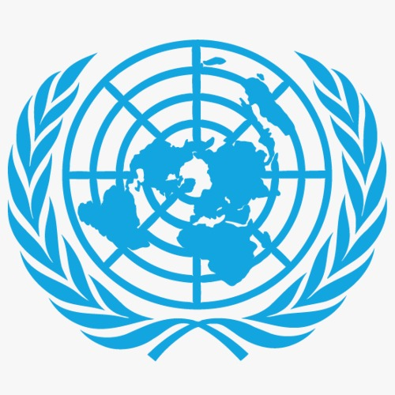

.jpg)
Zaid Mahmoud
Committee Chair
Zaid Mahmoud is beyond excited to chair at AMSIMUN. Having attended over a dozen conferences, Zaid plans to make AMSIMUN his best, as it is his final one. Zaid is committed to making his committee both professional and extremely enjoyable for his delegates. His experience in debate and diplomacy will allow him to not only facilitate the flow of the committee, but to also ensure that his delegates leave the conference much stronger than they were before. He stands ready to make AMSIMUN an entertaining learning experience for all, and close off the year with a BANG.
.jpg)
Qusai Al dour
Committee Chair
Qusai Aldaour’s journey began in Grade 9 when he joined Model United Nations, encouraged by his brother, without fully understanding what it was. At the time, he was shy and afraid to speak in front of an audience. Public speaking felt overwhelming, and confidence did not come easily. However, after joining Al Mawakeb, everything changed. He discovered a strong passion for debate, diplomacy, and geopolitics. With each conference, he pushed himself beyond his comfort zone, slowly transforming fear into confidence. Throughout his journey, he faced challenges and setbacks, but he learned to grow from them. Today, with 9+ MUN experiences, Qusai has developed strong leadership, research, and public speaking skills. What once intimidated him now motivates him, and he continues striving to improve with every opportunity.
Committee Image

Topic Description
PBC
Non-State Actors in Post-Conflict Reconstruction: Lessons from Gaza 2023–2024 and Other War-Torn Societies
Download Background Guide